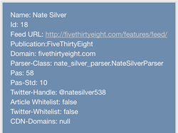
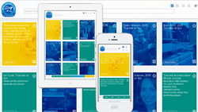
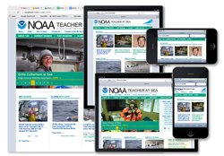

Hello! My name is Rob Ostheimer. I am a frontend Web/Interactive Designer with over 10 years experience managing the web presence of large government and non- government organizations. I am interested in developing Rich Interactive experiences that leverage a user's geolocation. Below is some of my most recent work.
AI-powered travel itinerary planner that discovers, rates, and auto-populates day-by-day trip recommendations — owning
product direction, architecture, and full-stack implementation.**
Check out App
Next.js 16React 18, TypeScript Tailwind CSS
Node.js PostgreSQL (Prisma) Google Places API Viator
Activities API RedisJest Playwright
Ever wonder what artists are from where you happen to be? I did, while driving to Minneapolis from Washington, DC.
From this kernel of an idea, an app was born. Music Where You Are will find songs by artists from where you happen
to be at that moment. After the app has figured out Where You Are, it loads two Spotify playlists (one that includes
artists from your geolocation, the other which loads songs about your geolocation).
Music Where You Are is responsively designed web app.
Check out App
IllustratorCSS Javascript AngularJS
HTML JSON Google Fusion Tables Echonest
API
Spotify API JQueryLeaflet API
Responsive Web Design

A Bay Area based startup needed a Contact Management app designed to add, organize and quickly browse for contacts
in their database. I developed this fully-responsive Contact Management App to allow for easy editing, adding to and
looking up from their database. The app features the capability to look at the data in multiple views and to upload
and download the data in JSON format for easy integration into a backend database. Additionally, it has a robust filtering/search
engine and the capability to sort your views based on multiple factors.
Check out the App
CSS Javascript AngularJS HTMLJSON JQuery Responsive Web Design

The NOAA Teacher at Sea Program (TAS) celebrated its 25th Anniversary in 2015. To commemorate the even, I was commissioned
to create an interactive timeline. Over 25 years, TAS had accumulated thousands of science blogposts and
images while sending over 700 teachers out to sea. This site uses a card design to allow the user to flip move through
the years of the TAS program's history. Featuring over 500 card, this site creates creates a unique tapestry of the
program's history.
Check out the App
CSS Javascript AngularJS HTMLJSON JQuery Responsive Web Design

Recently retrofitted to be responsive, this is the website for NOAA's Teacherat Sea Program. It includes the integration
of Twitter, Flickr, WordPress and youtube API's to highlight the program's social media presence. There is a impressive
amount of integration with the program's WordPress blogs. Using AngularJS in combination with Atom feeds produced
from Google Spreadsheets and the RSS feed from the Teacher at Sea WordPress Blog to connect to the WordPress blog
as a "Database/CMS", I used Jquery/Javascript to parses this information and populate the website with content. Additionally
the site provides a PHP search interface which allows users to search for photos and blog posts from the Teacher
at Sea WordPress blog.
Check out the App
CSS Javascript AngularJS HTMLJSON JQuery Responsive Web Design